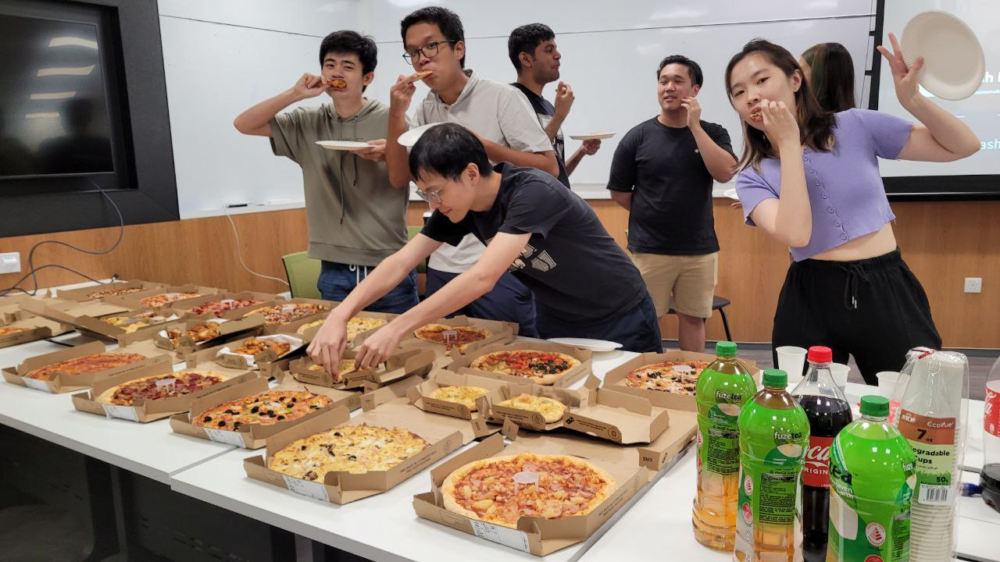
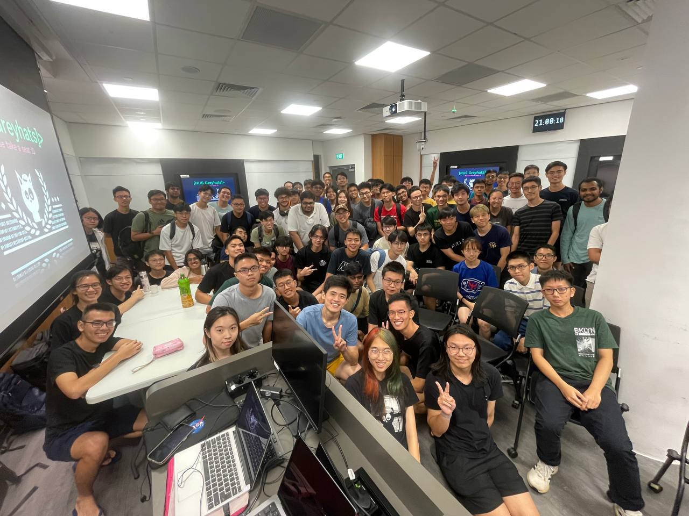
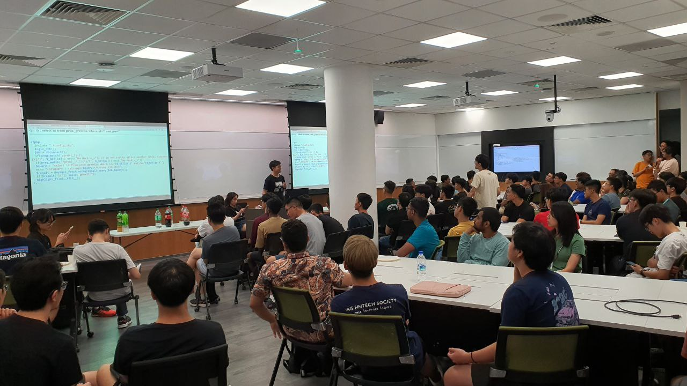

Our Welcome Tea Session is a get-together session hosted at the start of every academic year to introduce our club to NUS students. Come down to find out more about what we do! Refreshments are provided :) Sign up for our AY24/25 Welcome Tea Session here.
Here are some pictures from our Welcome Tea Session for AY23/24    < go back